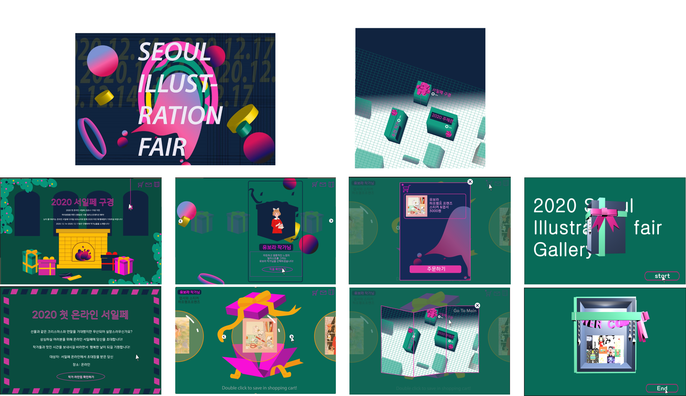
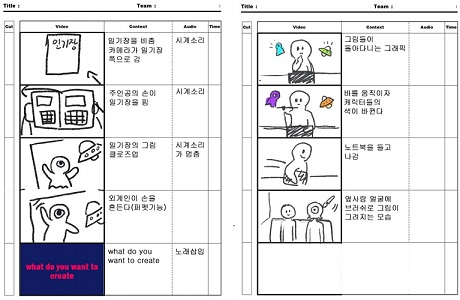
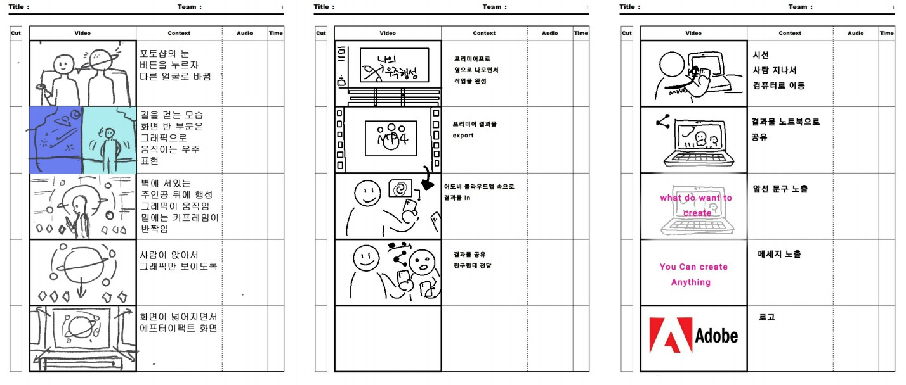
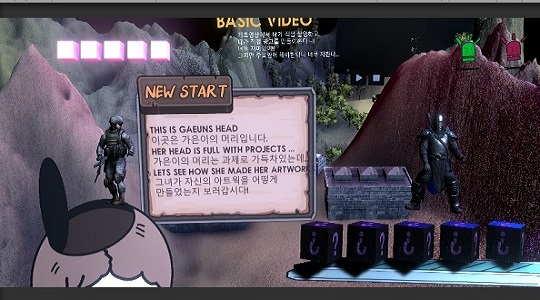
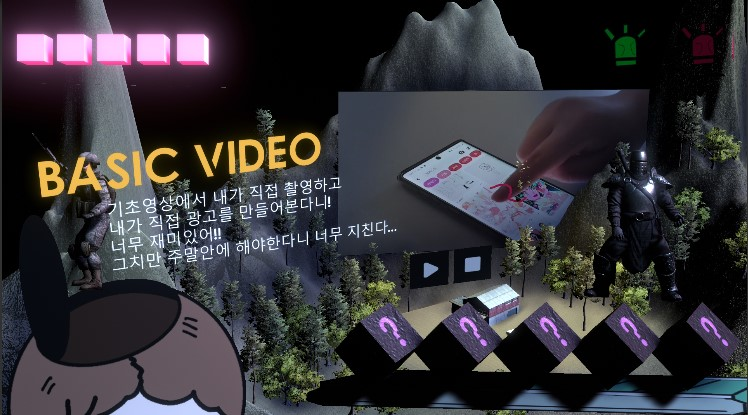
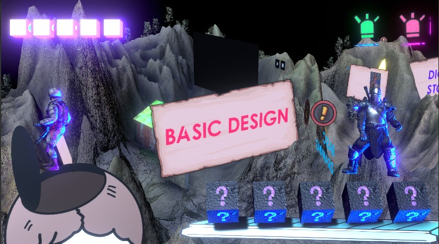

직무수행평가1때는
너무 아무것도 모르고 만들게 된 홈페이지였다.
의욕만 가득하게 많은 정보를 찾아서 진행했지만
레이아웃을 생각치도 않고 진행하는 바람에
엉망진창인 홈페이지가 탄생했다.
이제서야 어디가 잘못되고 어디를 고칠지
코딱지만큼은 알게 되었는데
이제서야 걸음마를 겨우 깨우쳤는데
끝나버렸다니 싱숭생숭하다.
물론 이번에도 내 마음처럼
진행되지 않아서 너무 슬펐지만
나만의 홈페이지를 만드는 과정이
어려우면서도 재미는 있었다.
시간이 벌써 흘러서
놀라울 따름이다.
_김가은의 소감
홈페이지 주제_서울 소개
설정한 컨셉_ 내가 가고 싶거나 가본 곳을 조사(소개)
제작_김가은 | 도움_네이버 사진
과제의 포인트 지점_ (놀거리 코스) 내가 직접 가본 놀거리를 소개하는 창
본격 머리안쓰려고 몸이 고생하기! 콘텐츠 디자인
2020.12.17
최종 시안 작업

xd에 모션을 넣을 방법을 몰라서 처음부터 끝까지 에프터이펙트로 작업했는데
시간이 너무 촉박해서 힘들었다.
아예 가상의 행사를 만들으려니
과제는 끝이 나지 않고
몸은 바쁜데 손은 하나여서 힘들었다.
다음번에는 조금은 머리를 써서
작업을 진행해야 조금 더
퀄리티가 있는 작품이 탄생할 것 같다.
주제 선정은 재미있었지만
마무리부분이 아쉬워서 나중에
고쳐보고 싶은 작품 중 하나이다.
_김가은의 소감
영상 브랜드_서울일러스트페어
영상 주제(컨셉)_ 2020 서울일러스트페어 온라인 버전의 디지털 브로슈어
영상 제작_김가은 도움_서울일러트페어 홈페이지
과제의 포인트 지점_ 전형적인 홈페이지를 탈피하고 다양한 체험 요소가 공존하는 디지털 브로슈어
영상디자인 완성되기까지..?
2020.12.08
스토리보드
 
친구들과 함께 촬영하고
같이 만들어 완성된 영상을 보니 뿌듯하다!
시간이 너무 촉박해서 힘들었지만
힘든만큼 재미도 있었다.
제출하는 주의 주말은 거의
영상 과제만 했던 것 같다.
여러가지 시행착오 (특히 일러스트)
를 겪으면서 발전한 것 같다.
서로의 취향도 다르고 추구하는 느낌이
달라서 처음에는 걱정을 했는데
각자의 장점을 잘 살려준 영상이
나온 것 같아서 다행이다.
_김가은의 소감
영상 브랜드_어도비(Adobe)
영상 주제(컨셉)_ 어도비로 이루어지는 무한한 상상력과 창조의 과정
영상 팀원_김가은 | 안소영 | 이정은
과제의 포인트 지점_ 현실과 어도비 세상에서의 분위기 전환(기능 설명)
신기했었던 그 과제 미디어테크놀로지
2020.12.08
가장 마음에 드는 부분
 
처음에 2D 유니티를 코딩을 경험한 후
3D를 처음 봤을때 이게 정말
완성이 가능할까라는 걱정 근심이 가득했었는데
결과적으로는 아주 재미있었다.
코딩은 사실 많이 없었고 캐릭터들이 멋지게
내가 만든 맵에서 움직이는게 너무 멋있었다.
결과물은 참혹했지만 그래도 내가 3D를 완성할 것이라
생각하지도 못했었기에 나는 나름
나 혼자 즐겼다는 점에서
만족을 하는 과제였다.
맵 구상부터 캐릭터를 움직이는 과정이
흥미롭고 신기한 경험이었다.
_김가은의 소감
유니티 주제_과제가 가득 찬 나의 머리
유니티 주제(컨셉)_ 너무 바빠서 과제로만 머리가 가득찬 나의 머리 속을 표현해보았다.
유니티 제작_김가은
과제의 포인트 지점_ 미스터리 박스로 어디로 이동할 지 모르는 기대감